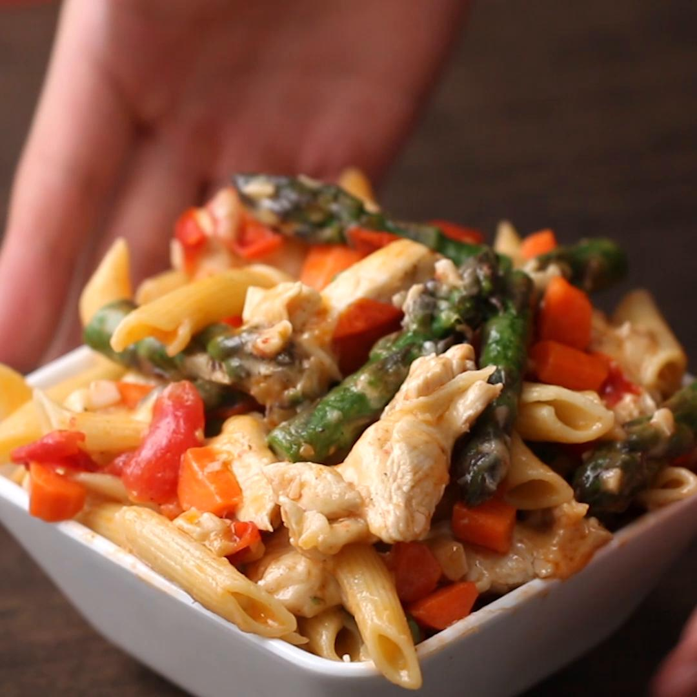

Garlic Primavera

Description
A delicious and easy-to-cook pasta dish that can be garnished with any kind of meat. It is made using simple ingredients and has a clean but complex flavor.
It can be made easily in a oven in under an hour and results in a dish that is to die for.
Ingredients
- 100gm of pasta
- 15gm of minced garlic
- cherry tomatoes, halved
- green beans
- one medium green pepper
- olive oil
- salt
- 225gm chicken breast/day
Steps
- Preheat oven to 400F
- Bring large pot of salted water to boil
- Brine chicken in salted water
- Cut vegetables
- Mix vegetables together with garlic and salt
- Prepare baking sheet with two large "bowls" of aluminum foil
- Mix cooked pasta with vegetable mix and distribute into foil bowls
- Throw in oven for 12min
- Line baking sheets with aluminum foil and drizzle olive oil
- Prepare chicken by washing off the brine, drying on paper towels and placing on the baking sheets
- Season with salt and lemon-pepper seasoning
- Cook in oven for about 20min until 165F internally
- Once rested, cut and distribute